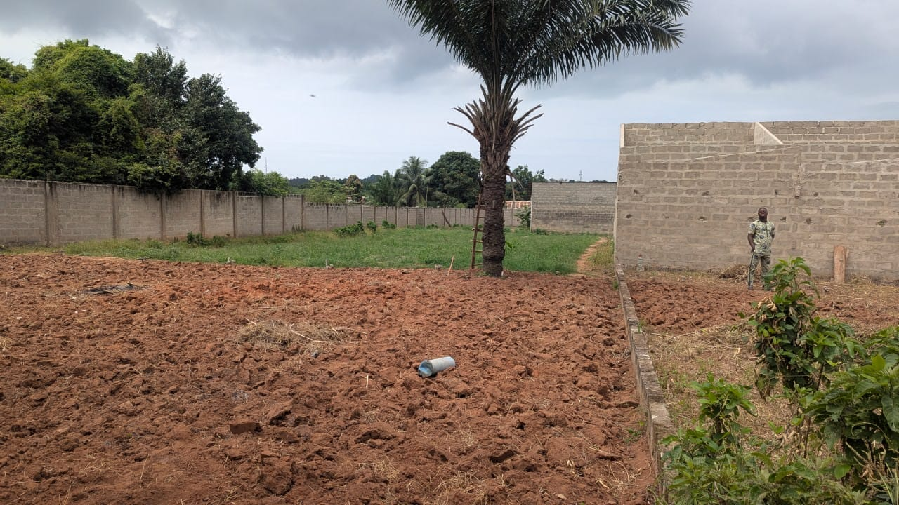

Accueil & assistance
Un point de repère dès votre arrivée.

Comparez trois formules à partir de 7 500 FCFA par tente et par nuit. Calculez votre séjour sans engagement.
Simuler mon séjour ↗Découvrir l’expérience ↓Pas de chambre d’hôtel ? Pas envie d’y consacrer tout votre budget ? Il y a une autre façon de vivre les Vodun Days.
VODUN CAMP imagine un hébergement simple, convivial et accessible. Une tente déjà installée, un coin pour se retrouver et le plaisir de prolonger les rencontres après le festival.
Trouvez votre formule ↗En solo ou à deux, gardez l’essentiel.
Tarifs indicatifs par tente et par nuit.
Offres, équipements et tarifs provisoires. Les réservations sont fermées. Aucun stock réel n’est disponible à la réservation.
Les services envisagés pour votre séjour.
Le détail sera confirmé avant l’ouverture.
Un point de repère dès votre arrivée.
Des espaces partagés prévus sur place.
De quoi rester connecté à vos proches.
Se poser, échanger, repartir explorer.
La photographie montre l’état du terrain.
Les conceptions ne prouvent pas un aménagement réalisé.
Vivez les Vodun Days à Ouidah et prenez le temps de découvrir la culture, les rencontres et l’atmosphère de la ville. VODUN CAMP est un projet d’hébergement indépendant.
Dates de l’édition, adresse exacte du camping et accès à confirmer.
Consulter le programme officiel ↗Le projet n’est pas ouvert à la réservation. Voici les éléments établis et ceux qui doivent être validés.
Ouidah, Bénin. Adresse exacte non communiquée. Distance du festival en kilomètres et durées à pied, taxi et moto non mesurées : aucun temps de trajet garanti.
Hypothèse de la maquette : une tente individuelle installée, un matelas et l’accès aux espaces communs, par nuit. Draps et oreillers non inclus dans Solo. L’offre commerciale reste à valider.
Aucun repas inclus dans le tarif de base. Le petit-déjeuner à 2 000 FCFA par personne et par nuit est une option simulée, pas un service confirmé. Restauration sur place et possibilité d’apporter ses repas non validées.
Électricité : non confirmée. Recharge téléphone : envisagée. Wi-Fi : non confirmé et non inclus dans l’offre simulée.
Des murs sont visibles sur la photo fournie. Gardiennage, éclairage opérationnel, fermeture du terrain et autorisation d’exploitation ne sont pas vérifiés. La propriété légale n’est pas documentée sur ce site.
La période du séjour n’est pas arrêtée. Saison et pluies attendues ne peuvent donc pas être précisées ici. Aucune prévision météo ni garantie d’absence de pluie n’est fournie.
Règlement non adopté à ce stade. Horaires calmes, arrivée/départ, politique sur les feux et consignes de sécurité devront être publiés avant toute inscription réelle.
VODUN CAMP Solo : 7 500 FCFA par tente et par nuit, tarif provisoire. Hôtel : aucun tarif comparable vérifié pour les mêmes dates et prestations. Aucune économie chiffrée n’est annoncée.
VODUN CAMP étudie un hébergement temporaire à Ouidah, indépendant des organisateurs des Vodun Days. Le nom public du responsable, son expérience, son contact et le financement n’ont pas encore été communiqués pour publication.
Le PDF est téléchargé sur votre appareil. La simulation n’est transmise à personne. Aucun rappel automatique ou manuel n’est actuellement déclenché.
Vos dates, votre formule et les petits extras qui vous font plaisir.
Retrouvez votre budget et vos coordonnées dans un seul récapitulatif.
Conservez les dates, la formule, les options et les conditions de cette simulation.
MODE DÉMONSTRATION
Aucun paiement ni réservation réelle.
Non, les formules proposées prévoient une tente installée et un matelas. Les équipements exacts seront confirmés à l’ouverture des réservations.
Le projet est situé à Ouidah, au Bénin. L’adresse précise, l’itinéraire et les distances vers les lieux du festival restent à confirmer.
Le tarif est par tente et par nuit. Solo accueille une personne ; Duo et Comfort accueillent deux personnes maximum. Les options indiquent leur propre mode de calcul.
Cette maquette permet uniquement de simuler un séjour. Aucune tente n’est bloquée et aucun montant n’est prélevé. Les disponibilités sont fictives.
Les conditions d’annulation, les horaires d’arrivée et de départ ainsi que le règlement seront communiqués avant toute réservation réelle.
Non. La simulation porte uniquement sur l’hébergement et les options sélectionnées. Consultez les informations officielles pour l’accès à l’événement.
Une question sur le lieu ou les formules ?
L’équipe sera joignable sur WhatsApp à l’ouverture.
Contact WhatsApp à venir.